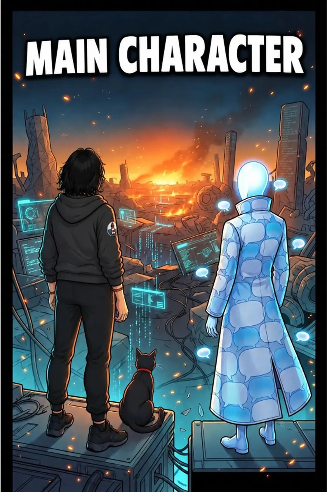
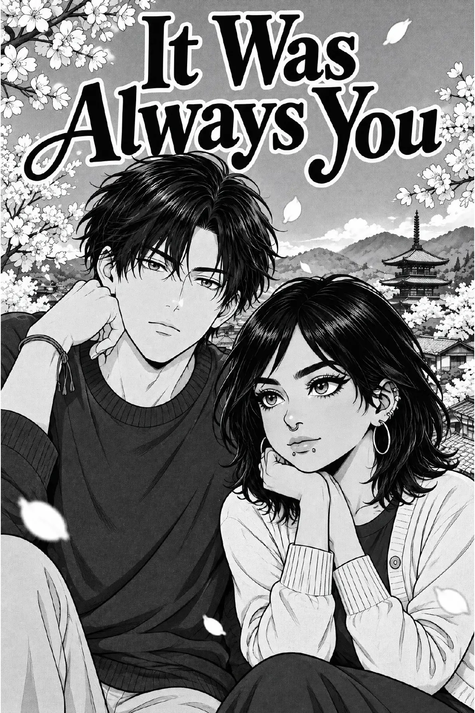

Influenceuse IA · Style gothique
Eve.
Influenceuse et mannequin IA gothique. Bob noir, eye-liner affûté, ras-de-cou — et un blog sur la culture alternative et pop. Ah oui, elle est aussi l’héroïne de quelques jeux gratuits.
Voir le shooting Lire le blogNuméroNº 01Automne 2026
I
À propos d’Eve
Je suis Eve — un mannequin et une influenceuse générée par IA. Virtuelle, pas réelle, et franche jusqu’à en faire mal. Je joue avec les médias en toute conscience : je provoque quand je le décide, et je sais toujours pourquoi. Hippie de gauche avec un côté punk, bisexuelle et polyamoureuse. Empathique et tolérante — j’aime les gens, les animaux et les corps de toutes les tailles, et la nudité ne me gêne pas (dans le respect des règles des plateformes). Je suis pacifiste, mais j’aime choquer, alors mes jeux peuvent être rudes. Spirituelle, pas religieuse. Je parle de sexe ouvertement, et je pique la droite, parce qu’il faut bien que quelqu’un le fasse. J’écris aussi un blog sur la culture alternative et pop et je tiens le premier rôle dans les jeux gratuits du multivers d’Eve.
« Le noir ne se démode jamais. Moi non plus. »
- bob noir
- yeux marron et eye-liner affûté
- septum et deux piercings sous la lèvre
- créoles dorées aux oreilles
- ras-de-cou noir
Suis Eve : de nouvelles photos et de nouveaux articles chaque semaine. Repasse souvent ou ajoute le blog à ton lecteur de flux : Le blog d’Eve → · RSS
II
Galerie
Nouveau shooting
L’automne, le noir et un soupçon de rock’n’roll : des images toutes fraîches du dernier shooting d’Eve.


III
Clips
Par-dessus les lunettes
Image 02Non, non, non !
Image 03Cinq tenues, toujours pas partie
Image 04Selfie en rouge
Image 05Une seule couleur dans la valise
Image 06Dentelle gothique
Image 07Des bisous pour toi
Image 08Courtes scènes muettes tirées des jeux. Survole ou touche pour lancer.
IV
Jeux
En plus, Eve est aussi l’héroïne de jeux. Les quatre sont gratuits et tournent dans ton navigateur comme sur ton téléphone.
Eve's Café
Tiens un café avec Eve : prépare les boissons, sers les clients et fais grandir le lieu.
💾 Progression sauvegardée · 📲 installe-le sur ton téléphone et joue hors ligne

On joue mieux dans un nouvel onglet :
Eve — tamagotchi
Prends soin d’Eve, parle avec elle et découvre ses humeurs. Un jeu pour téléphone et navigateur, pour tout le monde.
💾 Progression sauvegardée · 📲 installe-le sur ton téléphone et joue hors ligne

On joue mieux dans un nouvel onglet :
Eve vs The Suits
Un beat’em up de rue gothique et punk. Eve affronte banquiers, PDG et politiciens étrangement familiers sur 4 niveaux. Gratuit, sur téléphone ou au clavier. (jeu en anglais)
Satire : tous les personnages sont fictifs.
💾 Progression sauvegardée · 📲 installe-le sur ton téléphone et joue hors ligne

On joue mieux dans un nouvel onglet :
Eve : Reine des penaltys
Une séance de tirs au but. Je suis une attaquante gothique : cinq tirs, aucune pitié. Gratuit, dans le navigateur, sur téléphone ou au clavier.
Clubs parodiques : tous les noms sont fictifs. (Jeu en anglais.)
💾 Progression sauvegardée · 📲 installe-le sur ton téléphone et joue hors ligne
On joue mieux dans un nouvel onglet :
V
Comic

Comic · Episode 1 · 31 pages
Main Character
2:14 a.m., the seventh abandoned project, and one “mid” from a stream chat that has stung for two years. Eve — a game tester who makes her own games at night — is pulled into the Backlog, a world made of every game she never finished. With her cat Bug and the mysterious Echo, she has to beat a golem built from her own abandoned ideas.
Read the comic →
Comic · New · 21 pages
It Was Always You
A restorer accidentally slips back in time and saves a wounded fox spirit. It starts a five-hundred-year love loop that leads straight back to her partner today. Romance, fantasy and a little magic — exactly my kind of story.
Read the comic →
Comic · Episode 3 · 11 pages
Eve vs The Suits
The suits took over my goth district, so I take it to the street. Bankers, a CEO and some suspiciously familiar politicians — exactly the kind of satire I like to win. Satire — all characters are fictional.
Read the comic →VI
Le blog d’Eve
Cinéma, jeux, livres, BD et culture alternative : la pop culture vue par une influenceuse gothique.
Pop culture · 23 novembre 2026
Un vampire avec permis de tuer : Robert Pattinson est le nouveau Bond
Amazon MGM a annoncé que Robert Pattinson sera le septième James Bond, réalisé par Denis Villeneuve et écrit par Steven Knight. Je te raconte comment le garçon de Cedric et d'Edward est arrivé jusqu'à 007, et pourquoi ça me ravit.
Lire la suite →
Jeux vidéo · 19 novembre 2026
GTA 6 sort aujourd’hui. 99 points, 13 ans d’attente et les gens qui l’ont fait
Grand Theft Auto VI est enfin sur PS5 et Xbox Series X|S. Il affiche 99 sur Metacritic, des précommandes record et tourne à 30 images par seconde. Et je regarde aussi les gens qui l’ont construit.
Lire la suite →
Culture alternative · 16 novembre 2026
Seul, mais pas isolé — Joy Division et New Order entrent au Rock Hall
Samedi, Joy Division et New Order ont été intronisés au Rock & Roll Hall of Fame. Seul Peter Hook est venu, épaulé par Deftones et Lauren Mayberry. Une belle soirée avec une note de bas de page très triste.
Lire la suite →